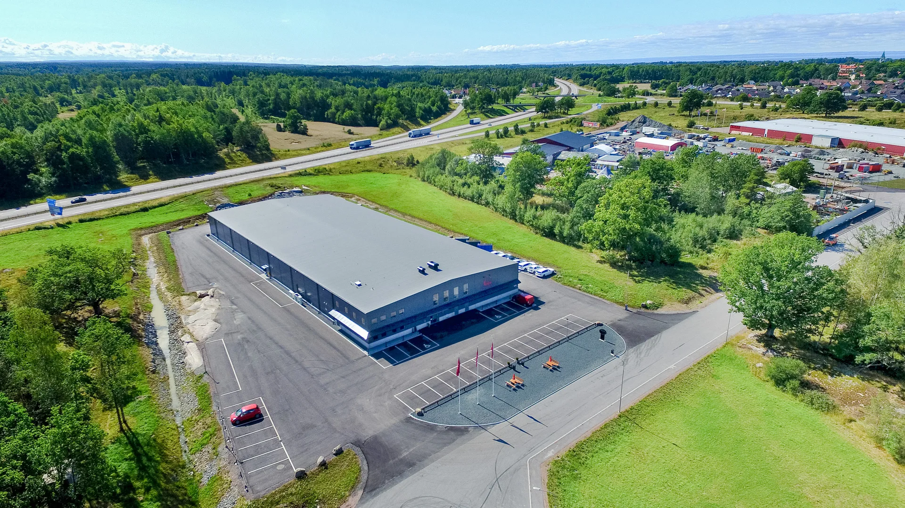
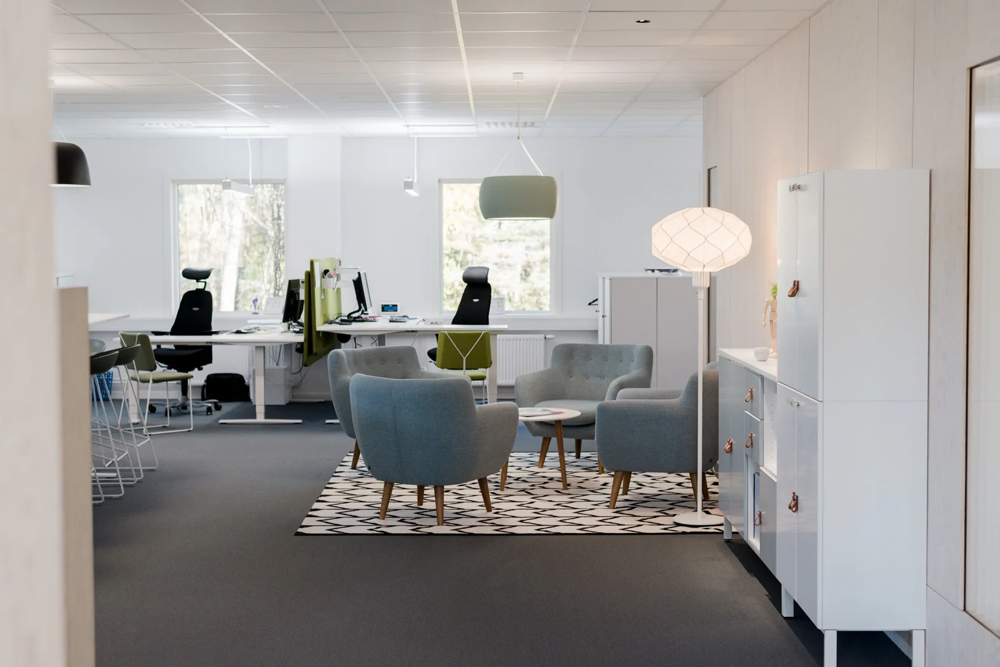
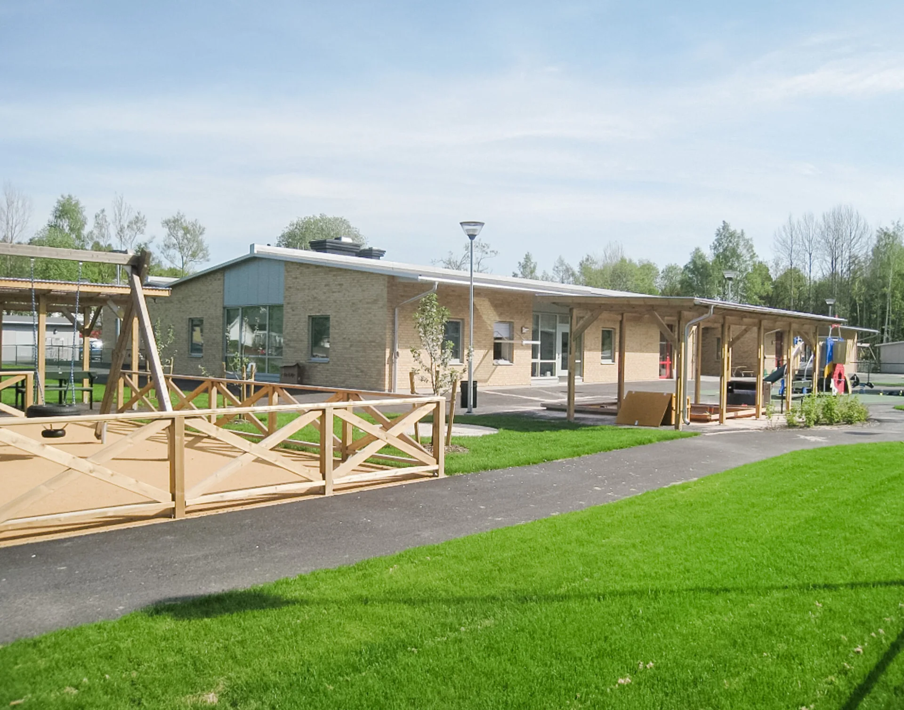

Byggt kring er verksamhet.
Nybyggnation, utbyggnad eller lokalanpassning. Vi utgår från vad lokalerna ska göra för er.

Industri, lager
& logistik.
När produktionen behöver mer plats eller logistiken en ny byggnad hjälper vi till att forma en lösning. Konstruktion, spännvidder och material anpassas efter verksamheten.
Med egen personal kan vi ta fram förslag i 3D, så att maskiner och produktionsflöden kan planeras tidigt.
Se vår produktionsbyggnad
Kontor
& lokalanpassning.
Få mer av ytan ni redan har, eller skapa plats för något nytt. Vi bygger om och anpassar lokaler för förändrade behov.
Från rum och arbetsplatser till gemensamma ytor. Vårt referensprojekt visar hur materialval och planlösning kan växa fram i samarbete med kunden.
Se kontorsprojektet
Skolor & lokaler
för vardagen.
Förskolor, utbildningsmiljöer och verkstäder ska tåla att användas. Vi bygger verksamhetslokaler med funktion och användning som utgångspunkt.
Bland våra projekt finns både en förskola i Huskvarna och en serviceverkstad för fordonsgymnasiet i Jönköping.
Se förskolanInför ert byggprojekt.
Kan ni hjälpa till redan innan ritningarna är färdiga?
Ja. Lundqvist Bygg erbjuder flera delar av processen, från ritning till färdig byggnad. Kontakta oss med idén och förutsättningarna så pratar vi om nästa steg.
Vilka entreprenadformer har ni erfarenhet av?
Våra referensprojekt omfattar totalentreprenad, generalentreprenad och partnering. Vilket upplägg som passar ert projekt diskuterar vi tillsammans.
Var arbetar ni?
Vi utgår från Huskvarna och arbetar i Jönköping med omnejd. Bland våra referenser finns också en produktionsbyggnad i Ödeshög.
Vad vill ni bygga härnäst?
En första idé eller färdiga ritningar. Vi tar samtalet där ni är.